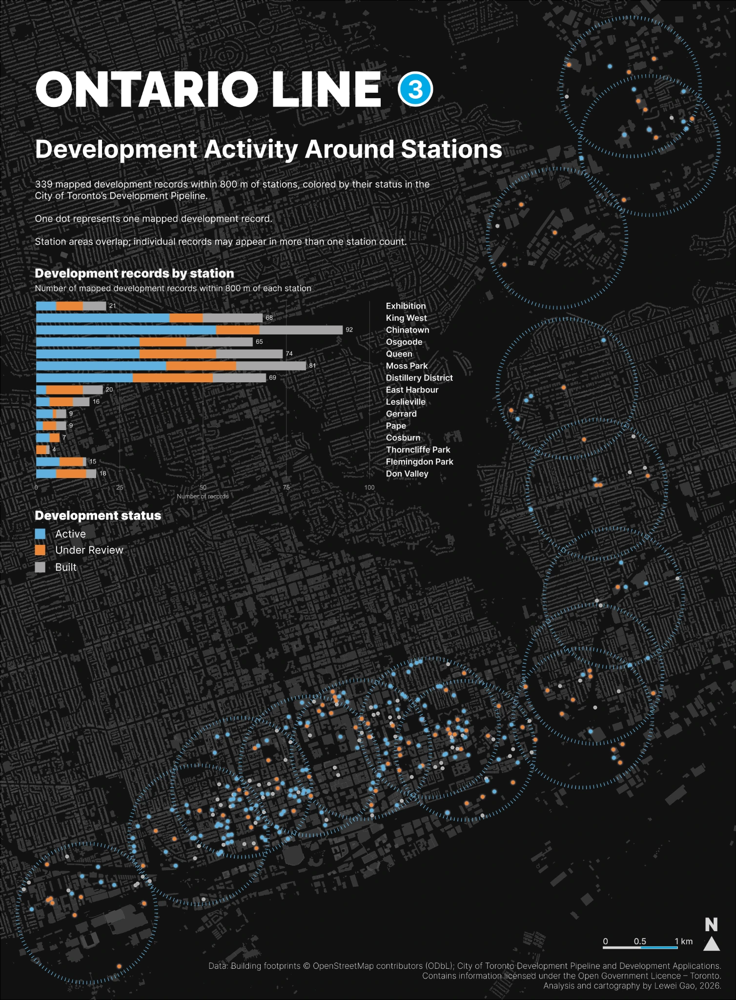
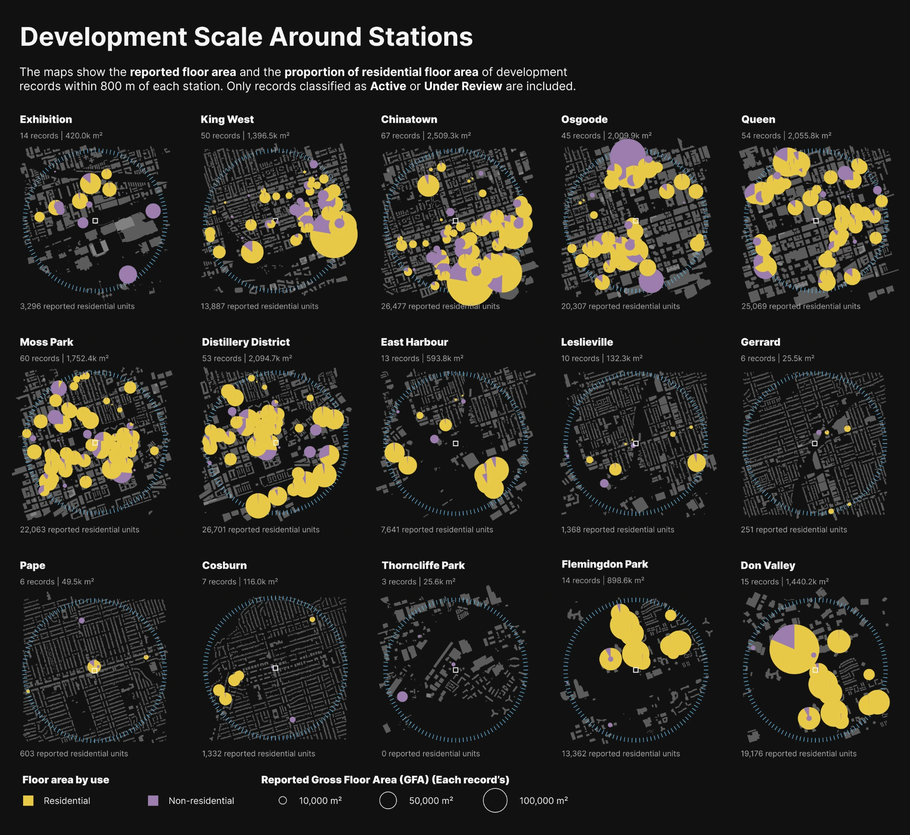
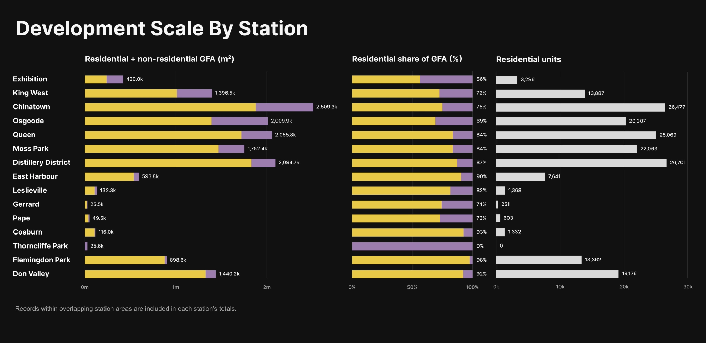
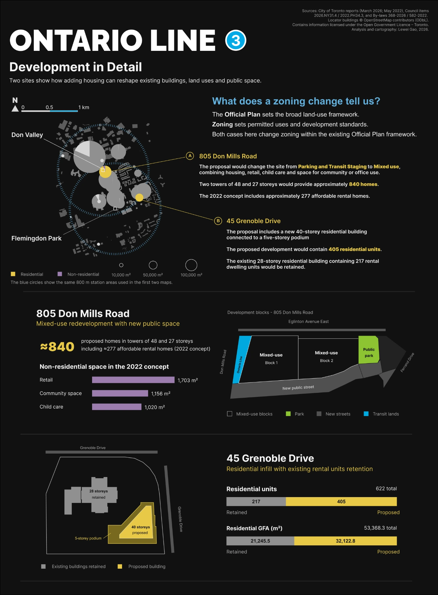

What is changing around the Ontario Line?
Development records reveal differences in the location, scale and proposed forms of change around the line’s 15 stations.
The first part of this project examined the buildings and land uses around the Ontario Line’s 15 stations. This second part looks at recorded development around the stations of the Ontario Line, which is currently under construction.
Using the City of Toronto’s development data, I compare the location, status, floor area and residential units of records within 800 metres of each station. Two case studies then explore how proposed development relates to existing buildings, land uses and planning permissions.
What the records represent
A development project can involve several applications, including requests to amend planning policies or zoning, approve a site layout and obtain building permits. Each application addresses a different decision in the development process.
The Development Pipeline groups related planning applications and building permits into development projects. This makes it useful for examining the scale and pattern of growth without counting the same proposal separately at each approval step. Large developments may still be recorded in phases.
This analysis maps 339 development records from the October 2026 data snapshot. The Development Applications dataset supports the location and review of individual records. These are records at different stages, rather than 339 new buildings or guaranteed future developments.
Where development is recorded
Records are concentrated around downtown stations. Chinatown has 92 records within its study area, compared with nine each around Gerrard and Pape. The map also shows development activity near the northern end of the line.
The colours distinguish Under Review, Active and Built projects. An Active record does not necessarily mean construction has started. It can also describe an approved project or one at the building-permit stage.
Click on the graphics to view at a higher resolution.

How the City defines development status
Projects are categorized into three general statuses, based on the stage of the development approvals and construction activity they reached within the pipeline window.
Under Review projects are those which have not yet been approved or refused, and those which are under appeal.
Active projects are those which have been approved, for which Building Permits have been applied or have been issued, and/or those which are under construction.
Built projects are those which became ready for occupancy and/or were completed during the period.
Definitions from the City’s Development Pipeline Dashboard.
How much development do the records represent?
The number of records tells only part of the story. Among the Active and Under Review records in this comparison, Don Valley has 15 records compared with Chinatown’s 67. Yet Don Valley’s reported gross floor area reaches about 1.44 million m², or 57% of Chinatown’s 2.51 million m².
Fewer records can therefore represent substantial development. The station maps show where this floor area is located, using the same map scale and proportional-circle scale for every station.
Click on the graphics to view at a higher resolution.

Gross floor area (GFA) measures floor space across a building’s floors, rather than the land it occupies. Residential GFA and residential unit counts describe different aspects of development scale; neither alone tells us whether homes will be affordable or available for rent.
Residential uses account for approximately 98% of reported GFA around Flemingdon Park and 92% around Don Valley. Gerrard, Pape and Cosburn have much smaller totals in this sample. The charts separate residential and non-residential floor space and compare the number of residential units.
Click on the graphics to view at a higher resolution.

Understanding the pattern in its planning context
Toronto’s Official Plan directs growth to areas including Downtown and the Central Waterfront, the Centres, the Avenues and Employment Areas. These places have different roles; a growth area is not automatically an area intended for more housing. The concentration of records downtown is consistent with its established role as a focus for growth.
Station areas can also overlap with secondary plans, Major Transit Station Areas and specific housing initiatives. These are different kinds of planning tools, and an 800-metre study area may contain several of them. Their presence offers context, but does not by itself explain the scale of a particular proposal.
The two cases below illustrate this distinction. At 45 Grenoble Drive, a residential addition is considered within an Apartment Neighbourhoods designation and the Flemingdon Park station-area planning context. At 805 Don Mills Road, the 2022 concept for a City-owned Housing Now site sits within the Don Mills Crossing Secondary Plan.
Site size, existing buildings, ownership and market conditions may also affect what is proposed. This snapshot does not test their relative influence or establish that a particular policy caused the mapped development.
What would change on the site?
The two cases connect reported development scale with changes on the ground. They are supplementary examples, rather than a classification of all development along the line.
45 Grenoble Drive
The proposal adds housing while retaining the existing rental building. The principal use remains residential, but the site accommodates more homes and a different arrangement of buildings and open space. A zoning amendment can change permitted building height and density without changing the site’s primary use.
805 Don Mills Road
The 2022 concept introduces housing and other uses on a parking and transit-staging site. Development blocks, a park and new streets also reorganize the land and public space. Here, the proposed change extends beyond building size.
Click on the graphics to view at a higher resolution.

Interpreting development around the line
The maps show an uneven pattern of recorded development. Downtown contains more records, while fewer records at the northern end can still represent substantial floor area. This contrast reflects differences in the scale of the recorded projects, not simply the frequency of development activity.
Planning context helps frame these differences, but does not establish their cause. Projects may have been submitted before a policy was introduced, revised as it changed, or approved under earlier permissions. A project’s location within a current policy boundary is therefore not evidence that the policy generated it.
The case studies show how proposed development relates to existing buildings, uses and permissions. More housing can be added while the main use remains residential, or as part of a broader reorganization of a site. These physical changes cannot be read from floor-area totals alone.
Together, the maps describe recorded development around the Ontario Line. They are neither a forecast of what will be built nor evidence that the Ontario Line caused this development.
Definitions
Official Plan, land-use designations and secondary plans
The Official Plan sets the City’s long-term direction for land use and growth. Its land-use designations describe the intended role and development context of different areas. They are not an inventory of what is currently built.
Secondary plans form part of the Official Plan and provide more detailed policies for particular areas. An Official Plan Amendment changes the Plan’s policies or maps.
Zoning, amendments and as-of-right development
A zoning by-law sets legally enforceable rules for development, including permitted uses, height, setbacks and other built-form requirements. A Zoning By-law Amendment changes those rules. It may allow a taller residential building without changing the primary use from residential.
As-of-right development complies with the applicable zoning permissions without requiring a rezoning or minor variance. Other approvals, including building permits, may still be required.
Major Transit Station Areas and Transit-Oriented Communities
Major Transit Station Areas (MTSAs) are planning areas around existing or planned higher-order transit stations, generally within an approximately 500- to 800-metre radius. Their adopted boundaries and policies are distinct from the uniform 800-metre circles used in this study.
Transit-Oriented Communities (TOCs) are specific development initiatives associated with transit investment. Being near an Ontario Line station does not automatically make a project part of a TOC initiative.
Housing Now and Expanding Housing Options in Neighbourhoods
Housing Now was launched to use City-owned land for mixed-income, mixed-use communities, including affordable rental housing. This is the initiative under which the 2022 concept for 805 Don Mills Road was prepared. The City’s Toronto Builds framework now brings together policies from earlier programs, including Housing Now; the case study retains the terminology of its source report.
Expanding Housing Options in Neighbourhoods (EHON) broadens the housing types permitted in Toronto’s neighbourhoods. Gentle intensification describes smaller-scale additions to housing supply, such as additional units or multiplexes. These forms of growth are not fully represented by a pipeline focused on larger development projects.
Data notes
What period do the records cover?
The maps use data downloaded in October 2026. A snapshot combines projects with different submission dates and development histories; it is not a count of applications submitted in October or development completed in 2026.
In the Development Pipeline Dashboard, the Year filter refers to the year the first application of a project was submitted. It does not identify the year of approval, construction or occupancy. The 2025 Development Activity Bulletin has its own reporting window and should not be treated as the same snapshot.
What does an approval tell us?
Planning and construction involve different permissions. An Official Plan or zoning amendment addresses what may be permitted. Site Plan Control reviews matters such as the arrangement of buildings, access, landscaping and servicing. A building permit authorizes specified construction work following the applicable review.
Not every project needs the same applications, and some processes overlap. Approval of one application does not mean all permissions are in place. A permit application is different from an issued permit, and an issued permit is different from completed construction or occupancy.
Projects can also have multiple permits. Conditional or partial permits may authorize a limited scope of work, so a single permit milestone should not be read as completion of the entire project.
How are records assigned to stations?
Each record is assigned to every 800-metre station buffer containing its mapped primary-address point. Its full reported floor area and residential unit count are attributed to each matching station area; sites are not divided at the buffer boundary.
These straight-line study areas are not walking catchments or official MTSA boundaries. They overlap, so station totals cannot simply be added together to produce a corridor total.
What can the totals tell us about housing supply?
The Pipeline focuses on development projects subject to Site Plan Control and is not a complete inventory of every housing addition. Smaller projects and changes within existing buildings may require other data sources.
Reported residential units and GFA are not automatically net additions to the existing stock. They should not be treated as completed homes, a measure of all zoning capacity, or progress toward a housing target without further reconciliation.
How are policies and case studies interpreted?
Policy context is discussed through the Official Plan and the two documented cases. The study does not assign every record to a policy initiative or estimate the effect of any initiative. Doing so would require project histories, policy dates and a suitable comparison.
The case studies use dated City reports and their associated zoning decisions. Concept quantities can change through later approvals. Floor areas shown in the case graphic are report or concept values and should not be substituted for statutory zoning maxima or minima. Site diagrams simplify the proposed arrangements.
Data sources
- Development Pipeline and Development Applications, City of Toronto Open Data. October 2026 downloads.
- Development Activity Bulletin 2025 and the Development Pipeline Dashboard, for definitions, reporting methods and planning context.
- Toronto Official Plan, secondary plans and the City policy pages linked above.
- 45 Grenoble Drive — March 2026 staff report, Council decision and Zoning By-law 368-2026.
- 805 Don Mills Road — May 2022 staff report, Council decision and Zoning By-law 582-2022.
- Building footprints © OpenStreetMap contributors. Station locations and the study-area framework follow Part 1.
The development data, planning documents and policy information used in this study are all publicly available materials published by the City of Toronto. If you would like to explore further, the Development Pipeline Dashboard is a great tool for discovering what is recorded around your neighbourhood.